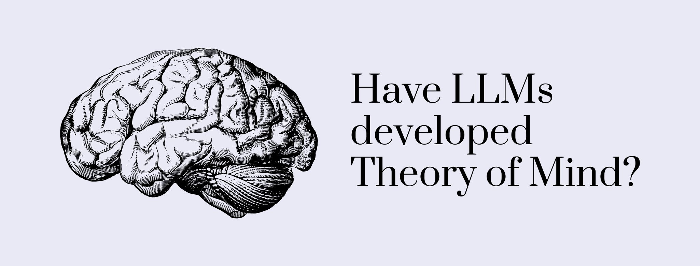
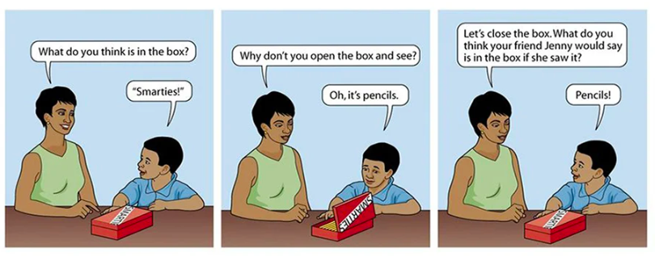

If you are into psychology, you have probably heard about Theory of Mind before. Theory of Mind is the ability to attribute mental states, such as beliefs, emotions, or desires, to oneself and others. It basically is the human ability to interpret what is going on in someone else's head. As you can imagine, Theory of Mind is an important cognitive skill needed for proper social interaction.
Despite its importance, humans are not born with Theory of Mind. Rather, they develop it over time. Specifically, research suggests that Theory of Mind emerges at the age of 3-4 years old and its emergence is related to processes of language development. This means that as little children start talking, they also start "mentalizing" (a term psychologists use to describe someone who is applying Theory of Mind).
Since Theory of Mind develops parallel to language development, it has been claimed that large language models (LLMs) might as well develop Theory of Mind. In other words, given that LLMs have been fed billions of sentences in different languages, exposing them to lots of vocabulary and complex grammatical structures, Theory of Mind might have emerged in these models as a by-product of exposure to language (engineers wouldn't have had to train them for this specifically).
The question of whether Theory of Mind has emerged in LLMs has sparked a lively debate among AI scientists, and some researchers have started to look for evidence.
In studies with little children, psychologists use false-belief problems to determine whether children have developed Theory of Mind. A false-belief problem assesses the child's understanding that people can hold incorrect beliefs and that these beliefs, although incorrect, might influence their behavior. An example of the false-belief problem is the false content. The problem presents the child with a situation that goes like this: "Imagine that a boy sees a box with a label that says "candy". The boy thinks the box contains candy. However, the boy opens the box and sees that there is no candy, but pencils inside." Then, the child is asked what another person unfamiliar with the box would think is inside. If the child answers "candy", that means the child has Theory of Mind. If, on the contrary, the child answers "pencils", the child doesn't have Theory of Mind.

Some researchers have examined whether LLMs would answer correctly to these false-belief problems. For example, one study showed false-belief problems to different LLMs (GPT-1, GPT-2, GPT-3 and GPT-4) to see how they responded. Results showed that only the most advanced of these LLMs, GPT-4, was able to solve all problems with a 75% accuracy. Based on previous studies with children, researchers concluded that GPT-4 behaved similarly to a 6-year-old.
Another study followed a similar methodology to examine whether an LLM could show Theory of Mind capabilities. This time, researchers showed false-belief problems to text-davinci-002, a model of the GPT-3 family. However, text-davinci-002 has not been trained with reinforcement learning from human feedback (RLHF). This helped avoid any potential human influence when solving the false-belief problems. This time, researchers found that the model achieved an accuracy of 74.5% (similar to the 75% from the other study!). Additionally, researchers also showed that humans completing the same false-belief problems got an accuracy rate of 82.7%.
Drawing from the research findings, one could argue that the latest LLMs are more powerful and, hence, more human-like. Although this might be true, since the more advanced an LLM was, the better it was at solving false-belief problems, it's important to emphasize the distinction between "actually having Theory of Mind" and "simulating to have Theory of Mind".
The studies presented here didn't include a way to tease apart the two possibilies, so findings should be taken with a grain of salt in this respect. Just like LLMs don't know anything about language, even though they sometimes output long and coherent texts, it could be that LLMs don't have Theory of Mind, but that they ouput texts acting as if they do.